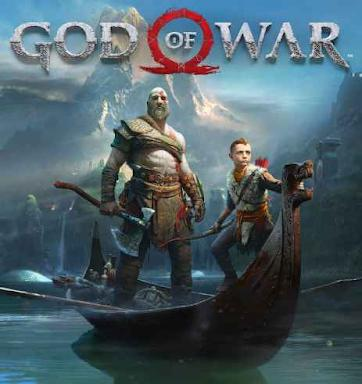

God of War (2018): O Renascimento Nórdico de Kratos
God of War (2018) é um jogo de ação e aventura que marca um novo começo para a franquia, transportando oprotagonista Kratos da Grécia Antiga para as terras geladas da mitologia nórdica.

História e Promissa
Após anos da destruição do Olimpo, Kratos vive como um homem em Midgard. O jogo começa logo após a morte de sua segunda esposa, Faye, cujo último desejo era que suas cinzas fossem espalhadas do pico mais alto dos nove reinos. Kratos parte nessa jornada acompanhado de seu filho, Atreus, a quem ele deve ensinar a sobreviver enquanto tenta esconder seu passado violento e sua natureza divina.
No caminho, eles são perseguidos por deuses nórdicos, como Baldur, que busca algo que Kratos possui, desencadeando conflitos que revelam segredos sobre o destino de Atreus e o futuro dos reinos.
Personagens principais
Protagonistas
- Kratos: O antigo Deus da Guerra grego agora busca uma vida tranquila em Midgard. Ele é um pai severo e reservado, lutando para conter sua fúria e ensinar seu filho, Atreus, a sobreviver em um mundo de deuses nórdicos impiedosos. Sua arma principal é o Machado Leviatã.
- Atreus: Filho de Kratos e Faye, ele acompanha seu pai na jornada para espalhar as cinzas da mãe. Ele possui uma habilidade inata para entender línguas e runas antigas, além de ser um arqueiro habilidoso que auxilia no combate. Durante o jogo, ele descobre que seu nome de batismo gigante é Loki.
Aliados e Suporte
- Mimir: Conhecido como o "Homem Mais Inteligente Vivo do Mundo", ele é um ex-conselheiro de Odin que foi aprisionado em uma árvore por séculos. Após ser resgatado (e decapitado) por Kratos, sua cabeça falante serve como guia e enciclopédia rúnica, narrando as lendas e segredos dos Nove Reinos.
- Freya: Inicialmente apresentada como a "Bruxa do Bosque", ela é uma deusa Vanir exilada em Midgard por Odin. Ela ajuda Kratos e Atreus em diversos momentos, mas guarda um segredo doloroso: ela é a mãe de Baldur e fez um feitiço para torná-lo invulnerável a tudo, exceto visco.
- Brok e Sindri: Dois irmãos anões ferreiros que criaram o Machado Leviatã e o martelo de Thor, Mjölnir. Brok é rude e direto, enquanto Sindri é extremamente higiênico (tem fobia de germes) e gentil. Eles são responsáveis por melhorar seus equipamentos durante o jogo.
Antagonista
- Baldur: Filho de Odin e Freya, ele é o principal vilão do jogo. Amaldiçoado pela própria mãe com invulnerabilidade absoluta para protegê-lo, ele perdeu a capacidade de sentir qualquer prazer físico ou dor, o que o levou à loucura e ao ressentimento profundo contra Freya. Ele persegue Kratos acreditando que o espartano possui as respostas para seu sofrimento.
Bestiário
O bestiário de God of ar (2018) é profundamente enraizado na mitologia nórdica, apresentando uma mistura de criaturas folclóricas, mortos-vivos e deuses reimaginados. A jornada de Kratos e Atreus por Midgard e outros reinos os coloca contra diversas ameaças únicas. Aqui estWão os principais inimigos e criaturas do bestiário nórdico no jogo de 2018:
Criaturas e Inimigos Comuns
- Draugr: Os Draugrs são os inimigos mais comuns e icônicos de God of War (2018), servindo como a base do combate no jogo. Eles são mortos-vivos da mitologia nórdica, guerreiros que morreram, mas cujas almas se recusaram a partir para o descanso eterno, reanimando seus próprios corpos com uma fúria incandescente
- Revenant (Regressada): As Revenants (conhecidas também como as "Bruxas") são um dos inimigos mais frustrantes e estratégicos de God of War (2018). Diferente dos Draugrs, elas não podem ser derrotadas apenas com força bruta, pois possuem uma esquiva mágica que as torna imunes a ataques diretos de Kratos.
- Hel-Walkers: Os Hel-Walkers (Andarilhos do Inferno) são almas que morreram de causas "desonrosas" (como doença, velhice ou acidente) e, devido ao transbordamento de Helheim, retornaram a Midgard como mortos-vivos gélidos. Diferente dos Draugrs, eles são movidos por uma energia de gelo, o que muda completamente a dinâmica da luta.
- Trolls: Os Trolls são os primeiros grandes desafios de God of War (2018). Eles não são apenas monstros genéricos; no jogo, cada um tem um nome e uma história (geralmente triste), sendo considerados uma raça antiga e solitária que está sendo levada à extinção. [1, 2] O que define um Troll no combate é o seu pilar de pedra, que eles usam tanto como clava quanto como canalizador de energia elemental.
- Ogros: Os Ogros são os "tanques" brutais de God of War (2018). Diferente dos Trolls, que são mais lentos e usam pilares, os Ogros são criaturas puramente físicas, rápidas e extremamente agressivas, que atacam com socos, investidas e batidas no chão.
- Wulver: Os Wulvers (frequentemente chamados de lobisomens pelos jogadores) são, sem dúvida, um dos inimigos mais agressivos e rápidos de God of War (2018). Eles não têm nada de mágicos ou lentos: são puro instinto, velocidade e força bruta.
- Elfos (Claros e Sombrios): Os Elfos protagonizam um dos conflitos mais antigos e visuais de God of War (2018): a eterna guerra pela Luz de Alfheim. A dinâmica de luta entre os dois tipos é completamente oposta, refletindo suas naturezas.
- Lindwyrms: Eles são filhos de Níðhöggr, a guardiã das raízes da Árvore do Mundo, Yggdrasil. [1, 3] Diferente dos dragões majestosos que você liberta em Midgard (Fafnir, Otr e Reginn), os Lindwyrms são menores, não têm asas e parecem serpentes com braços curtos e garras afiadas.
Chefes e Criaturas Míticas
- Baldur: O Baldur (também conhecido como "O Estranho") é o antagonista principal de God of War (2018). Ele é o motor de toda a jornada, desde a primeira luta épica na casa de Kratos até o confronto final nos picos gelados.
- Valquírias: As Valquírias são o desafio supremo de God of War (2018). Elas são chefes opcionais (com exceção da história de fundo) que guardam as Câmaras Ocultas de Odin. Originalmente, elas eram as servas de elite que levavam as almas dignas para Valhala, mas foram corrompidas por uma maldição de Odin que as prendeu em formas físicas e as enlouqueceu.
- Hræzlyr: Hræzlyr é o colossal dragão da montanha que Kratos e Atreus enfrentam em uma das batalhas de chefe mais cinematográficas de God of War (2018). Diferente dos dragões que você liberta nas missões secundárias, Hræzlyr é um combate obrigatório e serve para introduzir mecânicas importantes.
- Magni e Modi: Os filhos de Thor, Magni e Modi, representam a primeira vez que Kratos e Atreus enfrentam Deuses Aesir em dupla. Eles são o oposto um do outro em personalidade e estilo de luta, servindo como um teste real para a parceria entre pai e filho.
- Jörmungandr (Serpente do Mundo): A Jörmungandr, também conhecida como a Serpente do Mundo, é um dos personagens mais visualmente impressionantes e enigmáticos de God of War (2018). Ela é tão grande que seu corpo dá a volta em toda a Midgard, e seu despertar altera o mapa do jogo ao baixar o nível da água no Lago dos Nove.